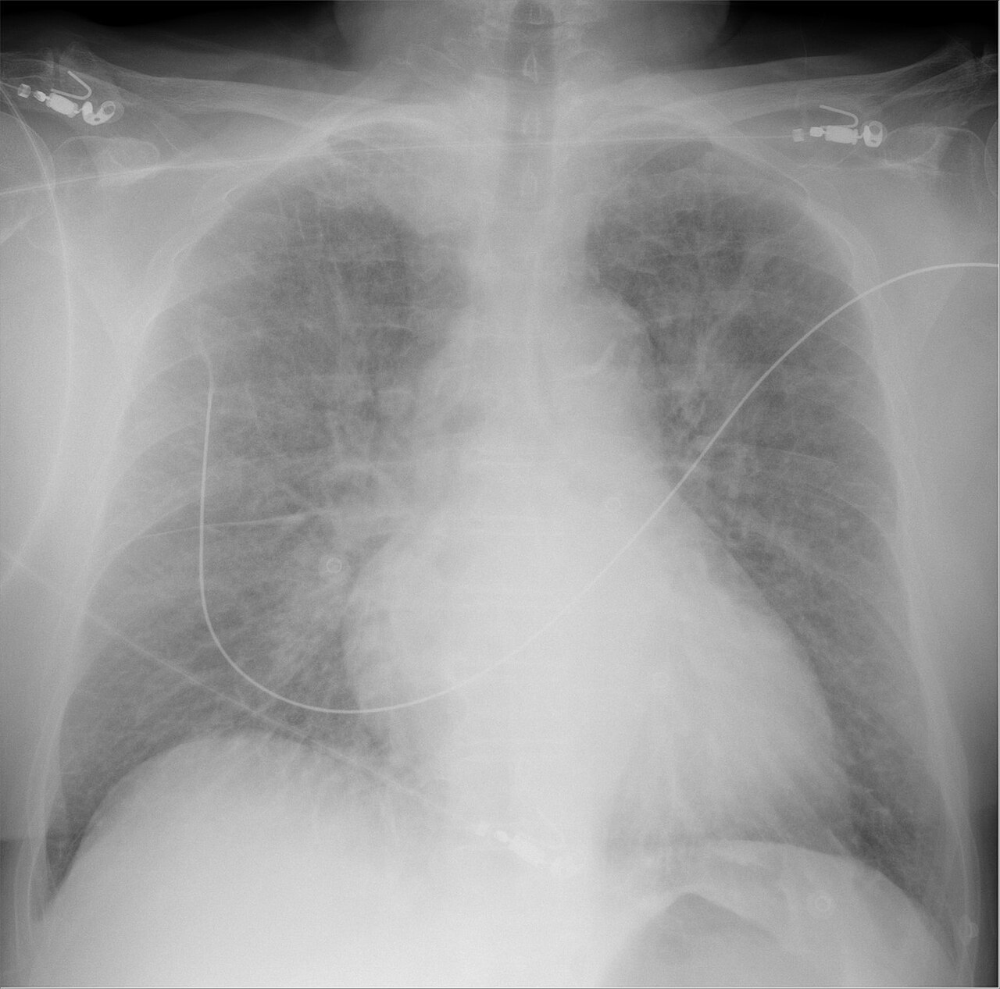

Ficha del catálogo
Edema pulmonar cardiogénico
- Sistema
- Respiratorio
- Modalidad
- RX
- Región
- Tórax
- Dificultad
- Básico
Acumulación de líquido en el intersticio y en los alvéolos por aumento de la presión hidrostática capilar, generalmente por insuficiencia cardiaca izquierda. Es una de las causas más frecuentes de disnea aguda en urgencias. La radiografía de tórax permite estimar el grado y seguir la respuesta al tratamiento en pocas horas.
Técnica
Radiografía de tórax, preferiblemente posteroanterior en bipedestación. En pacientes graves se realiza portátil anteroposterior, teniendo en cuenta la magnificación cardiaca que introduce.
Qué observar
- Redistribución vascular hacia campos superiores como signo más precoz
- Líneas septales periféricas horizontales perpendiculares a la pleura
- Engrosamiento peribroncovascular con manguitos alrededor de los bronquios
- Opacidades alveolares confluentes de distribución perihiliar en alas de mariposa
- Derrame pleural bilateral, con frecuencia mayor del lado derecho
- Cardiomegalia con índice cardiotorácico aumentado
Hallazgos
Opacidades intersticiales y alveolares de predominio central y bilateral, con líneas septales, derrame pleural y aumento de la silueta cardiaca.
Perlas
El edema cardiogénico avanza de forma ordenada: Primero redistribución, luego intersticio y por último alvéolo. Su distribución central y simétrica con derrame y cardiomegalia lo separa del edema lesional del síndrome de distrés.
Diagnóstico diferencial
- Síndrome de distrés respiratorio agudo
- Distribución periférica y parcheada, corazón normal y escaso derrame.
- Neumonía bilateral
- Consolidaciones asimétricas con fiebre y sin redistribución vascular.
- Hemorragia alveolar
- Ocupación difusa con hemoptisis y descenso de la hemoglobina.
Simuladores
- Proteinosis alveolar
- Neumonía por microorganismos oportunistas
- Sobrecarga de volumen en insuficiencia renal
Por modalidad
- RX
- Diagnóstico rápido y seguimiento evolutivo
- TC
- Aclara casos dudosos y detecta causas alternativas
- US
- Las líneas B pulmonares permiten valoración a pie de cama
Protocolo
Radiografía de tórax en bipedestación siempre que sea posible, con controles seriados usando técnica comparable.
Clasificación
Se describen fases de redistribución vascular, edema intersticial y edema alveolar según la progresión de la presión capilar pulmonar.
Errores frecuentes
- Sobrestimar la cardiomegalia en una radiografía portátil anteroposterior
- Confundir edema intersticial con infección en el paciente febril
- No comparar con estudios previos para valorar la respuesta al tratamiento

edema pulmonar insuficiencia cardiaca lineas septales alas de mariposa redistribucion derrame